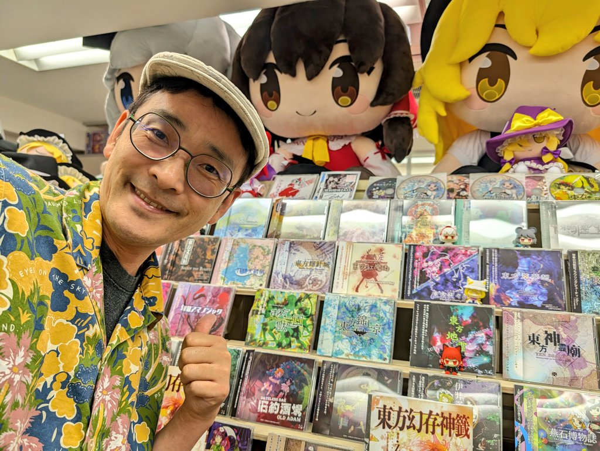

Introduction
What is Touhou Project?
A basic introduction
The Touhou Project, often just referred to as simply "Touhou" is a multimedia series created by Jun'ya Ota, who goes by the name ZUN. The series initially only consisted of video games, with the main genre being bullet-hell shoot-em-ups. And throughout most of its history, ZUN has primarily been the sole developer of the series, from the music, to the programming and art. Initially a project for ZUN to showcase his music in games, it ended up being massively successful. Today the series spans many different mediums, from games within several different genres to written works, comics, and CDs. The series takes place in a world inspired by Feudal Japan called Gensokyo. This place is cut off from the "outside world," and is home to many things of fantasy, typically creatures from Japanese folklore known as youkai.

A picture of ZUN,
alongside many of his games and CDs
Why representation matters
The series is known for having a cult following outside of Japan, though it seems to permeate through internet culture, particularly in Anime-adjacent spaces. As a series with a majority-female cast, there's often a stigma associated with it. Many series with a female-focused cast have been lacking when it comes to representation, especially when it comes to anime. Characters are often over-sexualized and shallow. While the complexity of many characters in Touhou can be argued, one of the best aspects of the series is the lack of sexualization when it comes to the characters.